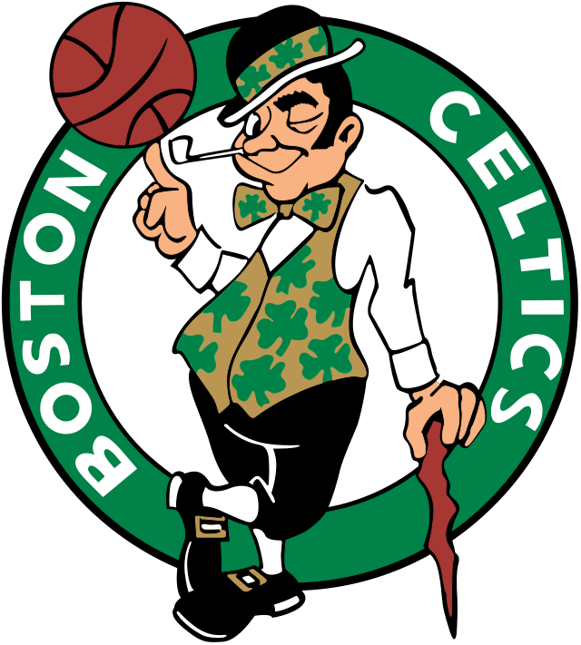

O Boston Celtics é uma franquia de basquetebol filiada à National Basketball Association e situada na cidade de Boston, no estado americano de Massachusetts. Fundado em 6 de junho de 1946, é uma das únicas equipes que se mantém desde que foi criada. É propriedade da Boston Basketball Partners LCC e joga os seus jogos em casa no TD Garden, dividindo o ginásio com o Boston Bruins da National Hockey League. É conhecido mundialmente por obter 17 títulos da NBA, o que o deixa como o maior vencedor da história da liga junto ao Los Angeles Lakers.